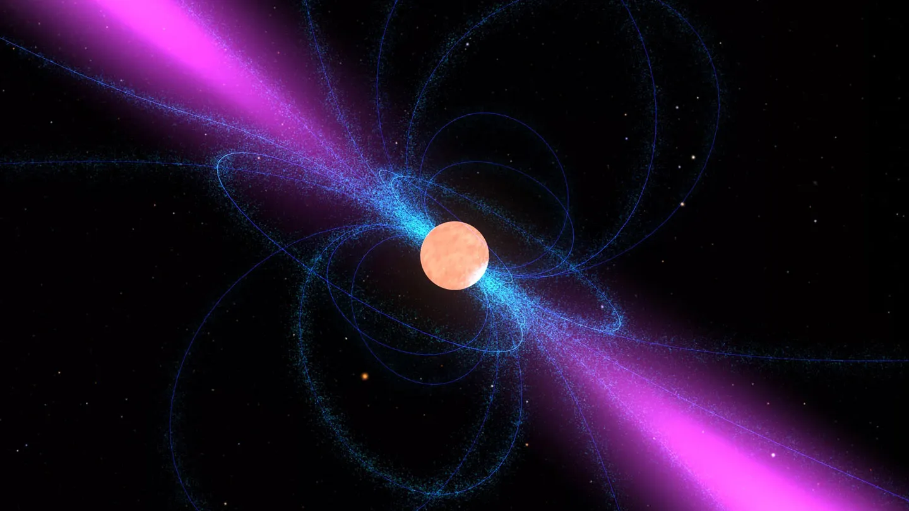
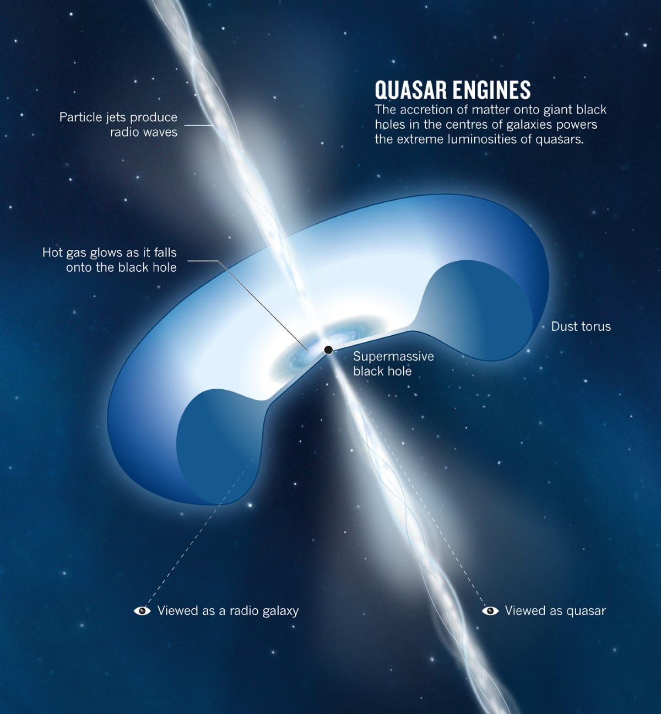
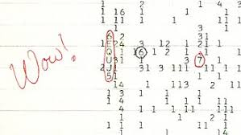

Anushka Space Website
Welcome to my space about space!
Pulsars

- Pulsars are highly magnetized, rotating neutron stars that emit beams of electromagnetic radiation.
- They are formed from the remnants of massive stars after a supernova explosion.
- Pulsars can rotate at incredibly high speeds, with some spinning hundreds of times per second.
- The radiation emitted by pulsars can be detected as regular pulses, hence the name "pulsar."
- Pulsars are used in various scientific applications, including testing theories of gravity and studying the interstellar medium.
- Pulsars are more accurate than the clock on your wall, as their rotational momentum is extremely high, and there is little resistance in the vaccuum of space.
Black Holes

- Black holes are regions of spacetime where gravity is so strong that nothing, not even light, can escape.
- They are formed from the remnants of massive stars that have undergone gravitational collapse.
- Black holes can vary in size, from stellar-mass black holes to supermassive black holes found at the centers of galaxies.
- The event horizon is the boundary around a black hole beyond which nothing can escape its gravitational pull.
- Black holes play a crucial role in astrophysics and are studied to understand the nature of gravity and the evolution of galaxies.
Quasars

- Quasars are extremely luminous active galactic nuclei powered by supermassive black holes.
- They are among the most distant and oldest objects in the universe, allowing us to study the early stages of galaxy formation.
- Quasars can outshine their entire host galaxies, making them visible from vast distances.
- The energy emitted by quasars comes from the accretion of matter onto the supermassive black hole.
- Studying quasars helps astronomers understand the growth and evolution of black holes and galaxies over cosmic time.
Dark Matter

- Dark matter is a hypothetical form of matter that is thought to make up approximately 27% of the universe.
- It does not emit or absorb light, making it invisible to electromagnetic radiation.
- Scientists infer the presence of dark matter through its gravitational effects on visible matter and the large-scale structure of the universe.
- Several candidates have been proposed for dark matter, including weakly interacting massive particles (WIMPs) and axions.
- Understanding dark matter is crucial for comprehending the evolution and ultimate fate of the universe.
Wow Signal

- The Wow Signal is a strong narrowband radio signal detected by astronomer Jerry R. Ehman in 1977.
- It was observed coming from the direction of the constellation Sagittarius and lasted for about one minute.
- The signal was so unusual that Ehman wrote "Wow!" on the printout, which is how it became known.
- Despite extensive searches, the source of the Wow Signal has never been identified, leading to speculation about its origin.
- The Wow Signal remains one of the most famous unexplained radio signals in the history of SETI (Search for Extraterrestrial Intelligence).